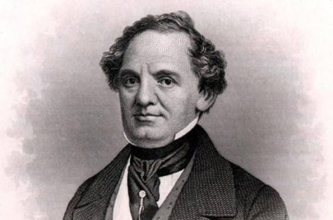

PSYCHOLOGY
Эффект Барнума
Эффект Барнума (эффект Форера) - тенденция людей безоговорочно верить в информацию, которая касается непосредственно их и иллюстрирует их с лучшей стороны. Эффект получил название благодаря американскому шоумену Финеасу Барнуму, который был известен тем, что создавал представления, используя многочисленные психологические манипуляции.
Этот эффект также называют эффектом Форера, поскольку именно Бертрам Форер в 1948 г. впервые провел эксперимент, в котором продемонстрировал его действие. Студенты выполнили тест, а исследователь заверил, что по его результатам он проведет психологический анализ их личностей. Однако вместо настоящего анализа он давал всем один и тот же текст с гороскопа. Затем Форер попросил каждого студента оценить по пятибалльной шкале соответствие описания их личности. Средняя оценка, которую он получил, — 4,26.
Вот текст, предложенный Б. Барнумом, которым не раз воспользовались другие исследователи в подобных исследованиях: «Вы нуждаетесь в том, чтобы другие люди вас любили и уважали, и в то же время Вы достаточно самокритичны. Хоть у Вас есть некоторые личные недостатки, вы способны их компенсировать. Вы обладаете значительным потенциалом, которым до сих пор не воспользовались выгодой для себя. Вы выглядите внешне дисциплинированной и уверенной человеком, однако в душе Вы волнуетесь и чувствуете себя неуверенно. Порой Вас охватывают сомнения, правильное решение ли Вы приняли, правильно ли сделали. Вы предпочитаете многообразие и изменения, и бываете недовольно, когда Вас ограничивают строгими правилами. Вы гордитесь собой как независимым умным человеком, Вы не принимаете на веру чужие суждения без достаточных доказательств. Однако Вы считаете, что не стоит быть слишком откровенным и искренним с другими. Иногда Вы экстраверт, приветливы и общительны, а в другой раз интровертированы, осторожны, сдержанны. Некоторые из Ваших стремлений нереалистичны».
Остроумный эксперимент Барнума был повторен сотни раз, и эффект всегда стабильно повторялся. Один французский психолог разместил в газетах рекламу, в которой предлагал услуги астролога. Получив сотни заказов, психолог разослал своим клиентам один и тот же гороскоп, состоящий из общих абстрактных суждений. Более 200 человек прислали психологу письма, полные благодарности за чрезвычайно точный прогноз.
Психолог Росс Стагнер провел эксперимент по схеме Б. Барнума с более опытными людьми. Он предложил 68 работникам заполнить психологическую анкету, на основе которой можно было составить достаточно детальное описание их личности. Также он составил одну характеристику («фальшивку»), в которой использовал 13 фраз из разных гороскопов. Исследователь зачитывал характеристики опрошенных, утверждая, что это описание сделано на основе психологического теста. Также он просил определить, насколько каждая фраза соответствует действительности, в какой мере отражает характер исследуемого. Более 30% участников считали, что их психологические портреты написаны удивительно точно, 40% — довольно точно, никто не определил свою характеристику как совершенно ложную. Существенно, что в эксперименте принимали участие довольно критические люди, которые имели большой опыт в оценке людей.
Большинство участников признали наиболее точными такие фразы: «Вы предпочитаете многообразие в жизни, и начинаете скучать, если вас ограничивают строгими правилами», «Хотя у Вас и есть некоторые личные недостатки, Вы, как правило умеете с ними справляться»; наиболее неподходящими: «В Вашем сексуальной жизни все же случаются незначительные проблемы», «Ваши надежды иногда бывают довольно нереалистичны».
Характерно, что эффект Барнума срабатывает только на положительных утверждениях.
P.S.Pugach